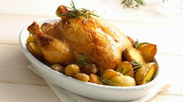

Receta del pollo al horno
Receta de patatas fritas caseras

Ingredientes
- 1 pollo entero
- 4 dientes de ajo
- Aceite de oliva
- Sal
Elaboración (pasos)
- 1. Precalentar el horno a 200 grados
- 2. Añadir el pollo, la sal y los ajos en una fuente especial para horno.
- 3. Hornear el pollo a 180 grados durante 40 minutos.
Para volver pinchar aquí